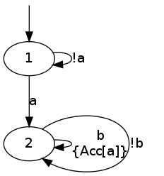
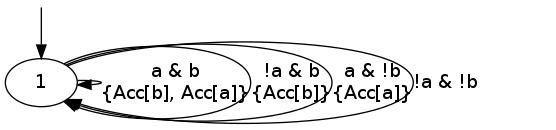
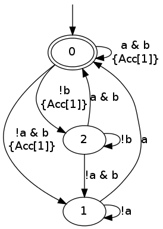
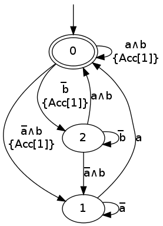
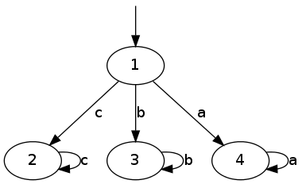
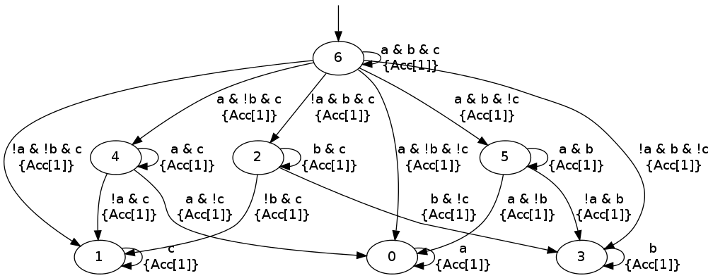
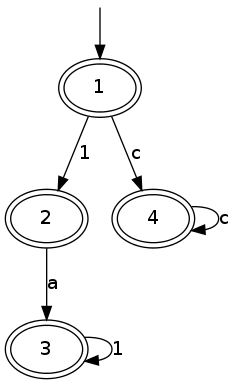
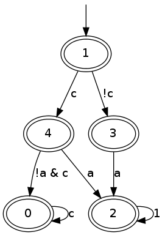

ltl2tgba
This tool translates LTL or PSL formulas into two kinds of Büchi
automata, or to monitors. The default is to output Transition-based
Generalized Büchi Automata (hereinafter abbreviated TGBA), but more
traditional Büchi automata (BA) may be requested using the -B
option.
Table of Contents
TGBA and BA
Formulas to translate may be specified using common input options for LTL/PSL formulas.
ltl2tgba -f 'Fa & GFb'
digraph G {
0 [label="", style=invis, height=0]
0 -> 1
1 [label="1"]
1 -> 2 [label="a\n"]
1 -> 1 [label="!a\n"]
2 [label="2"]
2 -> 2 [label="b\n{Acc[a]}"]
2 -> 2 [label="!b\n"]
}
Actually, because ltl2tgba is often used with a single formula
passed on the command line, the -f option can be omitted and any
command-line parameter that is not the argument of some option will be
assumed to be a formula to translate (this differs from ltlfilt,
where such parameters are assumed to be filenames).
The default output format, as shown above, is GraphViz's format. This
can converted into a picture, or into vectorial format using dot or
dotty. Typically, you could get a pdf of this TGBA using
ltl2tgba "Fa & GFb" | dot -Tpdf > tgba.pdf
The result would look like this:

The string between braces, Acc[b], represents an acceptance set (its
actual name is not really important): any transition labeled by
Acc[b] belongs to the Acc[b] acceptance set. You may have many
transitions in the same acceptance set, and a transition may also
belong to multiple acceptance sets. An infinite path through this
automaton is accepting iff it visit each acceptance set infinitely
often. Therefore, in the above example, any accepted path will
necessarily leave the initial state after a finite amount of steps,
and then it will verify the property b infinitely often. It is also
possible that an automaton do not use any acceptance set at all, in
which any run is accepting.
Here is a TGBA with multiple acceptance sets (we omit the call to
dot to render the output of ltl2tgba from now on):
ltl2tgba 'GFa & GFb'

The above TGBA has two acceptance sets: Acc[a] and Acc[b].
The position of these acceptance sets ensures that a and b atomic
proposition must be true infinitely often.
A Büchi automaton for the previous formula can be obtained with the
-B option:
ltl2tgba -B 'GFa & GFb'

Although accepting states in the Büchi automaton are pictured with
double-lines, internally this automaton is still handled as a TGBA
with a single acceptance set Acc[1] such that the transitions
leaving the state are either all accepting, or all non-accepting.
This is the reason why the Acc[1] sets are still shown in the
output: it shows that a Büchi automaton is (a special case of) a TGBA.
Various options controls the output format of ltl2tgba:
-8, --utf8 enable UTF-8 characters in output (ignored with
--lbtt or --spin)
--csv-escape quote formula output by %f in --format for use in
CSV file
--dot GraphViz's format (default)
-H, --hoaf[=s|t|m|l] Output the automaton in HOA format. Add letters
to select (s) state-based acceptance, (t)
transition-based acceptance, (m) mixed acceptance,
(l) single-line output
--lbtt[=t] LBTT's format (add =t to force transition-based
acceptance even on Büchi automata)
-s, --spin Spin neverclaim (implies --ba)
--spot SPOT's format
--stats=FORMAT output statistics about the automaton
Option -8 can be used to improve the readability of the output
if your system can display UTF-8 correctly.
ltl2tgba -B8 'GFa & GFb'

Spin output
Using the --spin or -s option, ltl2tgba will produce a Büchi automaton
(the -B option is implied) as a never claim that can be fed to Spin.
ltl2tgba -s is therefore a drop-in replacement for spin -f.
ltl2tgba -s 'GFa & GFb'
never { /* G(Fa & Fb) */
accept_init:
if
:: ((a) && (b)) -> goto accept_init
:: ((!(a)) && (b)) -> goto T0_S2
:: ((!(b))) -> goto T0_S3
fi;
T0_S2:
if
:: ((a)) -> goto accept_init
:: ((!(a))) -> goto T0_S2
fi;
T0_S3:
if
:: ((a) && (b)) -> goto accept_init
:: ((!(a)) && (b)) -> goto T0_S2
:: ((!(b))) -> goto T0_S3
fi;
}
Since Spin 6 extended its syntax to support arbitrary atomic
propositions, you may also need put the parser in --lenient mode to
support these:
ltl2tgba -s --lenient '(a < b) U (process[2]@ok)'
never { /* "a < b" U "process[2]@ok" */
T0_init:
if
:: ((process[2]@ok)) -> goto accept_all
:: ((a < b) && (!(process[2]@ok))) -> goto T0_init
fi;
accept_all:
skip
}
Do you favor deterministic or small automata?
The translation procedure can be controled by a few switches. A first set of options specifies the intent of the translation: whenever possible, would you prefer a small automaton or a deterministic automaton?
-a, --any no preference
-C, --complete output a complete automaton (combine with other
intents)
-D, --deterministic prefer deterministic automata
--small prefer small automata (default)
The --any option tells the translator that it should not target any
particular form of result: any automaton denoting the given formula is
OK. This effectively disables post-processings and speeds up the
translation.
With the -D option, the translator will attempt to produce a
deterministic automaton, even if this requires a lot of states. ltl2tgba
knows how to produce the minimal deterministic Büchi automaton for
any obligation property (this includes safety properties).
With the --small option (the default), the translator will not
produce a deterministic automaton when it knows how to build smaller
automaton.
An example formula where the difference between -D and --small is
flagrant is Ga|Gb|Gc:
ltl2tgba 'Ga|Gb|Gc'

ltl2tgba -D 'Ga|Gb|Gc'

You can augment the number of terms in the disjunction to magnify the
difference. For N terms, the --small automaton has N+1 states,
while the --deterministic automaton needs 2N-1 states.
Add the --complete option if you want to obtain a complete
automaton, with a sink state capturing that rejected words that would
not otherwise have a run in the output automaton.
A last parameter that can be used to tune the translation is the amount of pre- and post-processing performed. These two steps can be adjusted via a common set of switches:
--high all available optimizations (slow, default)
--low minimal optimizations (fast)
--medium moderate optimizations
Pre-processings are rewritings done on the LTL formulas, usually to
reduce its size, but mainly to put it in a form that will help the
translator (for instance F(a|b) is easier to translate than
F(a)|F(b)). At --low level, only simple syntactic rewritings are
performed. At --medium level, additional simplifications based on
syntactic implications are performed. At --high level, language
containment is used instead of syntactic implications.
Post-processings are cleanups and simplifications of the automaton produced by the core translator. The algorithms used during post-processing are
- SCC filtering: removing useless strongly connected components, and useless acceptance sets.
- direct simulation: merge states based on suffix inclusion.
- iterated simulations: merge states based on suffix inclusion, or prefix inclusion, in a loop.
- WDBA minimization: determinize and minimize automata representing obligation properties.
- degeneralization: convert a TGBA into a BA
The chaining of these various algorithms depends on the selected
combination of optimization level (--low, --medium, --high),
translation intent (--small, --deterministic) and type of
automaton desired (--tgba, --ba).
A notable configuration is --any --low, which will produce a TGBA as
fast as possible. In this case, post-processing is disabled, and only
syntactic rewritings are performed. This can be used for
satisfiability checking, although in this context even building an
automaton is overkill (you only need an accepted run).
Finally, it should be noted that the default optimization options
(--small --high) are usually overkill. --low will produce good
automata most of the time. Most of pattern formulas of genltl will
be efficiently translated in this configuration (meaning that --small --high will not produce a better automaton). If you are planning to
generate automata for large family of pattern formulas, it makes sense
to experiment with the different settings on a small version of the
pattern, and select the lowest setting that satisfies your
expectations.
Translating multiple formulas for statistics
If multiple formulas are given to ltl2tgba, the corresponding
automata will be output one after the other. This is not very
convenient, since most of these output formats are not designed to
represent multiple automata, and tools like dot will only display
the first one.
One situation where passing many formulas to ltl2tgba is useful is
in combination with the --stats=FORMAT option. This option will
output statistics about the translated automata instead of the
automata themselves. The FORMAT string should indicate which
statistics should be output, and how they should be output using the
following sequence of characters (other characters are output as-is):
%% a single % %a number of acceptance sets %c number of SCCs %d 1 if the automaton is deterministic, 0 otherwise %e number of edges %f the formula, in Spot's syntax %n number of nondeterministic states %p 1 if the automaton is complete, 0 otherwise %r translation time (including pre- and %s number of states %t number of transitions
For instance we can study the size of the automata generated for the
right-nested U formulas as follows:
genltl --u-right=1..8 | ltl2tgba -F - --stats '%s states and %e edges for "%f"'
2 states and 2 edges for "p1" 2 states and 3 edges for "p1 U p2" 3 states and 6 edges for "p1 U (p2 U p3)" 4 states and 10 edges for "p1 U (p2 U (p3 U p4))" 5 states and 15 edges for "p1 U (p2 U (p3 U (p4 U p5)))" 6 states and 21 edges for "p1 U (p2 U (p3 U (p4 U (p5 U p6))))" 7 states and 28 edges for "p1 U (p2 U (p3 U (p4 U (p5 U (p6 U p7)))))" 8 states and 36 edges for "p1 U (p2 U (p3 U (p4 U (p5 U (p6 U (p7 U p8))))))"
Here -F - means that formulas should be read from the standard input.
When computing the size of an automaton, we distinguish transitions and edges. An edge between two states is labeled by a Boolean formula and may in fact represent several transitions labeled by compatible Boolean assignment.
For instance if the atomic propositions are x and y, an edge labeled
by the formula !x actually represents two transitions labeled respectively
with !x&y and !x&!y.
Two automata with the same structures (states and edges) but differing labels, may have a different count of transitions, e.g., if one has more restricted labels.
More examples of how to use –stats to create CSV files are on a separate page.
Building Monitors
In addition to TGBA and BA, ltl2tgba can output monitor using the
-M option. These are finite automata that accept all prefixes of a
formula. The idea is that you can use these automata to monitor a
system as it is running, and report a violation as soon as no
compatible outgoing transition exist.
ltl2tgba -M may output non-deterministic monitors while ltl2tgba -MD (short for --monitor --deterministic) will output the minimal
deterministic monitor for the given formula.
ltl2tgba -M '(Xa & Fb) | Gc'
digraph G {
0 [label="", style=invis, height=0]
0 -> 1
1 [label="1", peripheries=2]
1 -> 2 [label="1\\n"]
1 -> 3 [label="c\\n"]
2 [label="2", peripheries=2]
2 -> 4 [label="a\\n"]
3 [label="3", peripheries=2]
3 -> 3 [label="c\\n"]
4 [label="4", peripheries=2]
4 -> 4 [label="1\\n"]
}

ltl2tgba -MD '(Xa & Fb) | Gc'

Because they accept all finite executions that could be extended to
match the formula, monitor cannot be used to check for eventualities
such as F(a). Any finite execution can be extended to match F(a).